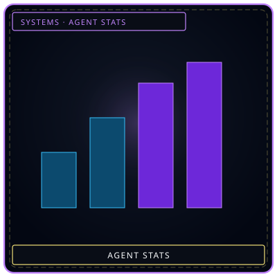
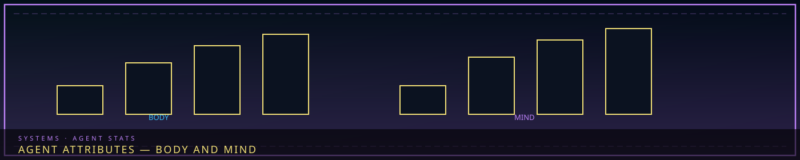
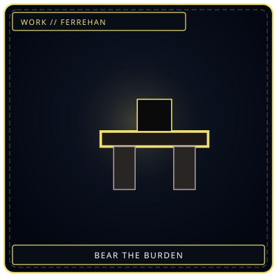

Mind / BodyTwo columns
/// RAPID JUMP:
STATUS: ARCHIVE VERIFIED |
CLEARANCE: LEVEL-4 OVERSIGHT |
PROTOCOL: REVERIE DIRECTORATE
ARTICLE
DISCUSSION
SOURCE
HISTORY
YEAR 4,238 · DAWN OF HOPE
SYSTEMS & MECHANICS RECORD
Agent Attributes & Cognitive Stats
CANONICAL RECORD: Sourced directly from the official Project Somnarak Worldbuilding Codex.
CANONICAL CROSS-LINKS & ATLAS CONNECTIONS
“A worker is a ledger of what they can still bear.”

 BurdenHan they already carry
BurdenHan they already carry
EndureFerrehan axisAgent Stats — R.D. Personnel Attributes
Overview
"In a world built on sorrow, your strength is not how hard you hit — it is how much you can carry."
Every R.D. personnel member is assessed on four core attributes — measuring their ability to withstand, process, and work with Han.
The Four Attributes
| Attribute | Symbol | Color | What It Measures |
|---|---|---|---|
| Resilience | ♦ | Deep Blue | Physical endurance — ability to withstand Han's weight |
| Clarity | ♠ | Pale White | Mental stability — ability to resist emotional manipulation |
| Composure | ♣ | Crimson | Emotional control — ability to maintain focus under sorrow |
| Resolve | ♠ | Black | Willpower — ability to act despite the weight |
Resilience (♦ Deep Blue)
What it measures: Physical endurance — how much Han-weight a person can bear before breaking.
What it affects:
- Maximum HP (physical health)
- Resistance to physical damage from entities
- Ability to carry heavy M.A.W. equipment
- Endurance during long shifts
How it's trained:
- Physical conditioning — exercise, labor, combat training
- Han exposure — gradual, controlled exposure to heavy Han environments
- M.A.W. bearing — carrying heavy equipment over time
Low Resilience: The person breaks easily under physical stress — injuries, exhaustion, premature aging.
High Resilience: The person can endure what would break others — they carry the weight without complaint.
Clarity (♠ Pale White)
What it measures: Mental stability — how well a person resists emotional manipulation, memory loss, and Dream interference.
What it affects:
- Maximum SP (mental health)
- Resistance to Void-element attacks
- Ability to distinguish Dream from reality
- Memory retention — resisting memory theft
How it's trained:
- Meditation — focus exercises, mindfulness
- Dream exposure — controlled, brief dips into the Dream realm
- Memory exercises — recalling, organizing, protecting personal memories
Low Clarity: The person is easily confused, manipulated, or lost in the Dream — they forget who they are.
High Clarity: The person maintains their identity even under extreme pressure — they know who they are.
Composure (♣ Crimson)
What it measures: Emotional control — how well a person maintains focus under emotional stress.
What it affects:
- Work speed — how quickly and effectively they perform Work Types
- Resistance to Grudge-element attacks
- Ability to perform Flerehan (Tears) without breaking down
- M.A.W. bonding stability
How it's trained:
- Emotional regulation — learning to feel without being overwhelmed
- Confrontation training — facing anger, fear, grief without losing control
- M.A.W. bonding — gradual exposure to entity emotions
Low Composure: The person breaks down emotionally — crying, raging, or withdrawing when they need to act.
High Composure: The person feels everything — but chooses when to express it. They are steady when others fall apart.
Resolve (♦ Black)
What it measures: Willpower — how determined a person is to act despite the weight of sorrow.
What it affects:
- Movement speed — how quickly they navigate the facility
- Resistance to Weight-element attacks
- Ability to perform Ferrehan (Endurance) without collapsing
- Leadership capability — inspiring others under pressure
How it's trained:
- Purpose-finding — understanding why they work, what they fight for
- Endurance tests — pushing past limits in controlled environments
- Moral challenges — making difficult decisions under pressure
Low Resolve: The person gives up easily — they see no point in continuing.
High Resolve: The person persists even when everything says stop — they carry on because they must.
Attribute Levels
Each attribute ranges from 1 (lowest) to 100 (highest). Most civilians average 20-30 in each attribute. Trained R.D. personnel average 40-60. Echo-Cores commonly reach Exceptional (81-100) in the attributes central to their function, but Echo-Core designation does not require every score to exceed 80.
| Level | Range | Description |
|---|---|---|
| Fragile | 1-20 | Below civilian average — vulnerable to Han effects |
| Average | 21-40 | Civilian level — can survive daily life |
| Trained | 41-60 | R.D. personnel level — can perform Work Types safely |
| Veteran | 61-80 | Experienced personnel — can handle dangerous entities |
| Exceptional | 81-100 | Echo-Core level — can withstand what breaks others |
Attribute Interactions
How attributes interact with Work Types:
| Work Type | Primary Attribute | Secondary Attribute | Failure Condition |
|---|---|---|---|
| Flerehan (Tears) | Composure | Clarity | Emotional breakdown — crying, withdrawal |
| Pugnahan (Confrontation) | Resolve | Resilience | Physical collapse — exhaustion, injury |
| Viderehan (Observation) | Clarity | Composure | Mental breakdown — confusion, hallucination |
| Ferrehan (Endurance) | Resilience | Resolve | Total collapse — physical and mental exhaustion |
How attributes affect M.A.W. bonding:
| Attribute | Effect on Bonding |
|---|---|
| Resilience | Higher = can wear heavier M.A.W. |
| Clarity | Higher = better entity communication, less memory bleed |
| Composure | Higher = more stable bond, less personality shift |
| Resolve | Higher = stronger bond, less rejection risk |
Attribute Gains and Losses
How attributes change over time:
| Event | Effect |
|---|---|
| Successful Work Type | +1 to relevant attribute |
| Failed Work Type | -1 to relevant attribute |
| M.A.W. bonding | +2 to primary attribute, -1 to secondary |
| Fracture (early stage) | -5 to all attributes |
| Core Suppression | +10 to all attributes (if survived) |
| Major breach survival | +3 to Resilience and Resolve |
| Memory loss | -10 to Clarity |
| Emotional trauma | -10 to Composure |
| Physical injury | -10 to Resilience |
Sample Attribute Profiles
Echo-Cores:
| Echo-Core | Resilience | Clarity | Composure | Resolve |
|---|---|---|---|---|
| The Director | 95 | 80 | 70 | 99 |
| The Secretary | N/A (AI) | 99 | 85 | 60 |
| Containment Lead | 85 | 60 | 75 | 90 |
| Extraction Lead | 70 | 80 | 90 | 75 |
| Research Lead | 60 | 95 | 40 | 70 |
| Border Lead | 90 | 70 | 80 | 85 |
| Archive Lead | 50 | 90 | 60 | 80 |
| The Outsider | 80 | 75 | 85 | 95 |
| The Exile | 85 | 65 | 70 | 90 |
SED Team:
| Member | Resilience | Clarity | Composure | Resolve |
|---|---|---|---|---|
| Yeonhwa | 55 | 70 | 65 | 80 |
| Doha | 75 | 50 | 60 | 70 |
| Harin | 80 | 55 | 70 | 85 |
| Sora | 45 | 85 | 50 | 60 |
| Minjae | 50 | 80 | 65 | 75 |
| Jisoo | 55 | 75 | 80 | 65 |
| The Silent One | 70 | 60 | 90 | 95 |